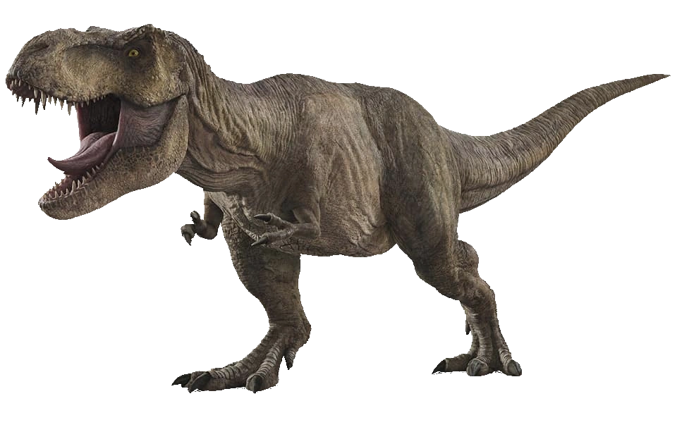
Tyrannosaurus, communément appelé tyrannosaure(T-rex), est un genre éteint de dinosaures théropodes appartenant à la famille des Tyrannosauridae et ayant vécu au Campanien et au Maastrichtien, derniers étages du Crétacé, il y a environ 68 à 66 millions d'années, en Amérique du Nord.Tout comme les autres membres du clade des Tyrannosauridae, Tyrannosaurus était un carnassier bipède doté d'un crâne massif équilibré par une longue queue puissante. Comparés à ses larges membres postérieurs, les bras du Tyrannosaurus étaient petits et atrophiés et ne portaient que deux doigts griffus. Même si d'autres théropodes rivalisaient voire dépassaient Tyrannosaurus en taille, il est le plus grand Tyrannosauridae connu et l'un des plus grands carnivores terrestres ayant existé sur la planète, avec une longueur de plus de 13,2 mètres,, 4 mètres à hauteur de hanches et un poids pouvant atteindre 8 tonnes (pour les spécimens les plus lourds).
Spinosaurus aegyptiacus, communément appelé Spinosaure. Spinosaurus est un genre fossile de dinosaures théropodes appartenant à la famille des Spinosauridae et ayant vécu à l'Albien et au Cénomanien, dans ce qui est actuellement l'Afrique du Nord.
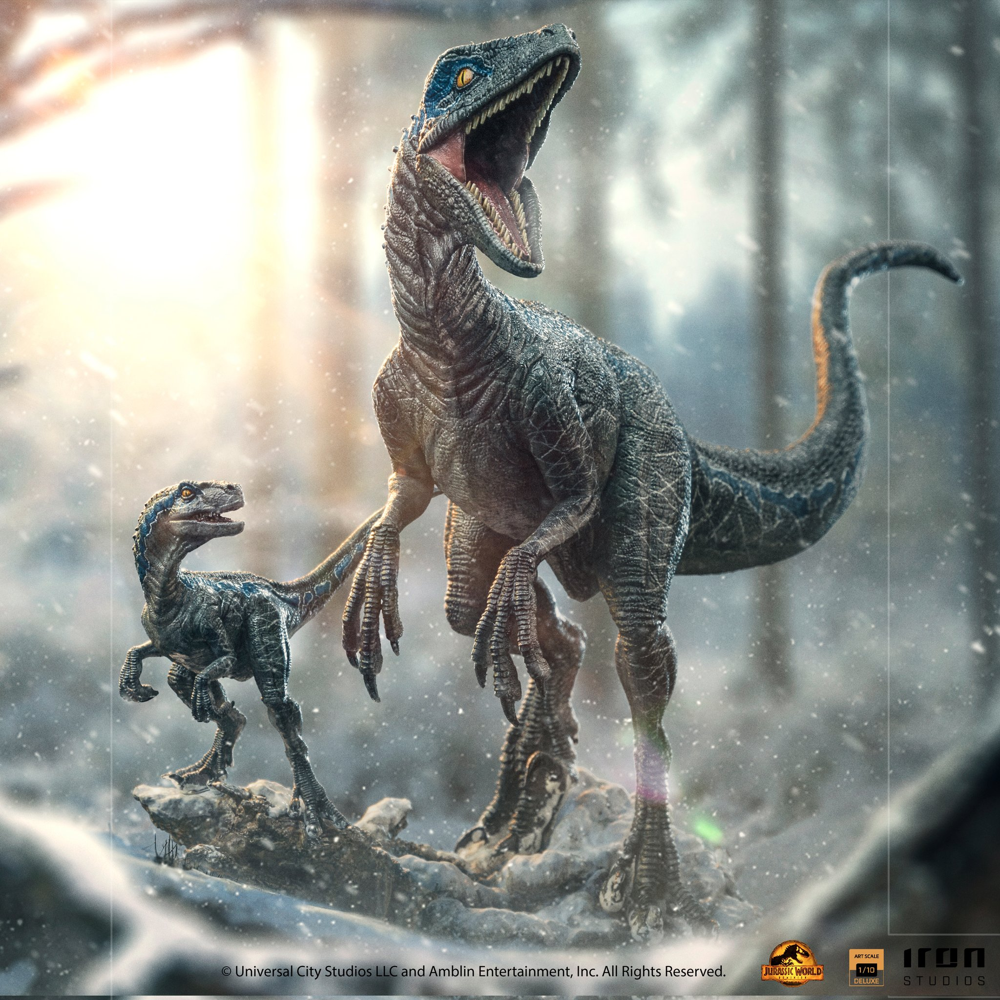
Velociraptor (littéralement « voleur rapide »), souvent francisé sous le terme vélociraptor, est un genre éteint de petits dinosaures théropodes appartenant à la famille des droméosauridés, ayant vécu durant le Crétacé supérieur dans ce qui est aujourd'hui l'Asie, il y a entre 75 et 71 millions d'années. Deux espèces sont actuellement connues, bien que d'autres aient été attribuées par le passé. L'espèce type, Velociraptor mongoliensis, est connue à partir des fossiles découverts dans la formation de Djadokhta en Mongolie. Une deuxième espèce, Velociraptor osmolskae, a été décrite en 2008 grâce à des fragments crâniens découverts dans la formation de Bayan Mandahu en Chine.
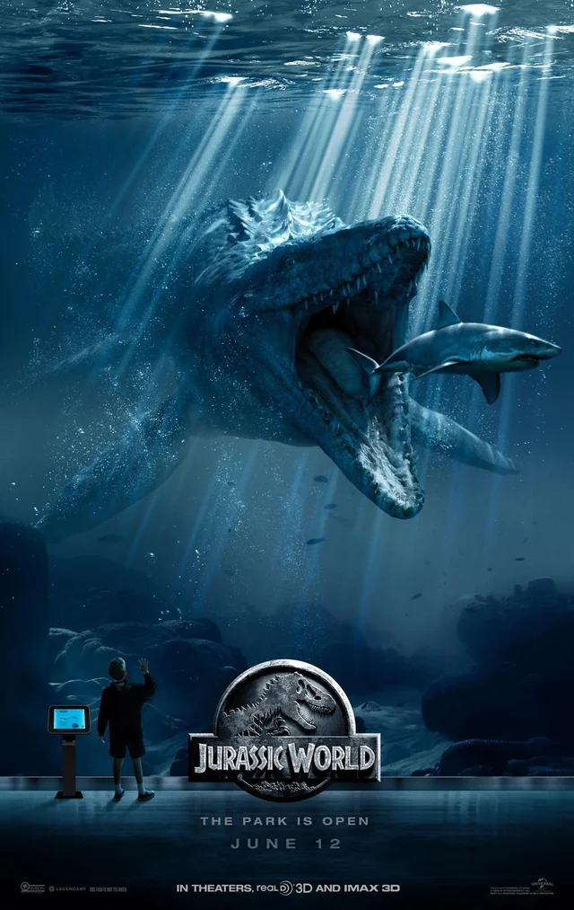
Mosasaurus est un genre fossile de grands squamates marins de la famille des mosasauridés dont il est le genre type, ayant vécu durant le Crétacé supérieur, il y a entre 82 et 66 millions d'années avant notre ère. Les premiers fossiles de Mosasaurus sont des crânes découverts dans une carrière située près de Maastricht, aux Pays-Bas, à la fin du XVIIIe siècle. L'interprétation de ces fossiles, largement débattue parmi les chercheurs de l'époque, assure la célébrité scientifique du « grand animal de Maastricht ». En 1808, le naturaliste Georges Cuvier décrit l'animal comme un grand reptile marin partageant des similitudes avec les varans, mais différent de tout représentant vivant connu.
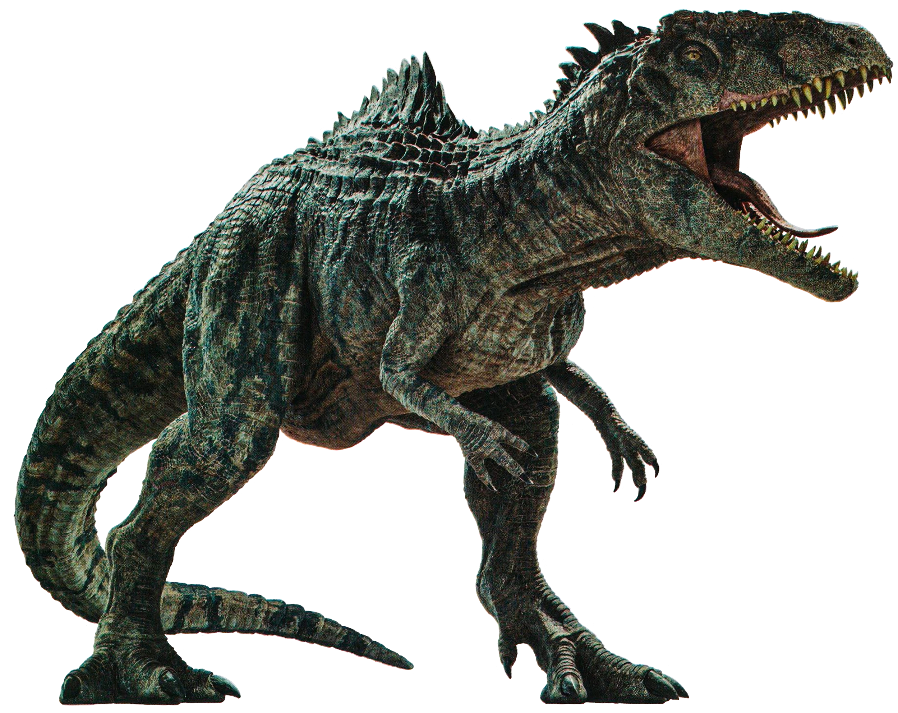
Giganotosaurus (littéralement : « lézard géant du sud ») est un genre fossile de dinosaures de la famille des Carcharodontosauridés, qui vivait en Amérique du Sud (dans l'actuelle Argentine) il y a entre 99 et 95 millions d'années (début du Crétacé supérieur, étage du Cénomanien). Selon Paleobiology Database en 2025, ce genre est resté monotypique et la seule espèce est Giganotosaurus carolinii. C'est l'un des plus grands carnivores terrestres de tous les temps, probablement plus grand que le célèbre Tyrannosaurus rex ou que son cousin l'Allosaurus.
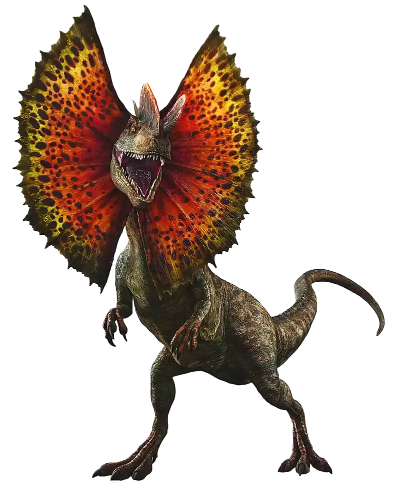
Le dilophosaure ou Dilophosaurus (« lézard à deux crêtes » en grec) est un genre éteint de grands dinosaures théropodes carnivores, découvert en Chine et en Arizona où il vivait au Jurassique inférieur, il y a environ entre 199 et 183 Ma (millions d'années), au cours des étages Sinémurien et Pliensbachien. Les premiers spécimens furent décrits en 1954, mais ce n'est que plus d'une décennie plus tard que leur genre reçut leur nom actuel. Le dilophosaure est l'un des plus anciens théropodes connus, mais également l'un des moins bien compris. Le dilophosaure est apparu à plusieurs reprises dans la culture populaire, notamment dans le film Jurassic Park, de Steven Spielberg, en 1993.

Therizinosaurus est un genre éteint de dinosaures théropodes de la famille des Therizinosauridae. Il a vécu à la fin du Crétacé supérieur au Maastrichtien, il y a 70 à 66 millions d'années, en Chine et en Mongolie, dans la formation de Nemegt. Therizinosaurus mesurait 5 mètres de haut, 9 mètres de long et pesait jusqu'à 6 tonnes.il était herbivore et se servait sûrement de ses longues griffes pour détacher les feuilles des branches à la manière d’un peigne. Il pouvait également les utiliser comme moyen de défense contre les prédateurs de cette époque comme le tarbosaurus.
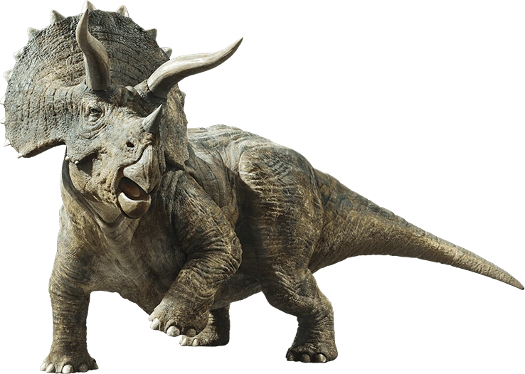
Il a été l'un des derniers dinosaures non-aviens vivant juste avant leur disparition lors de la grande extinction Crétacé-Paléogène. C'est aussi l'un des plus connus et des plus reconnaissables, très présent dans les grands musées paléontologiques et abondamment représenté en paléoart avec sa grande collerette osseuse, ses trois cornes et ses pattes massives. Ses similitudes avec les rhinocéros laissent penser qu'il occupait la même niche écologique, à ceci près que les Triceratops vivaient en troupeau comme le montrent leurs traces. Il était contemporain du tyrannosaure dont il était une proie
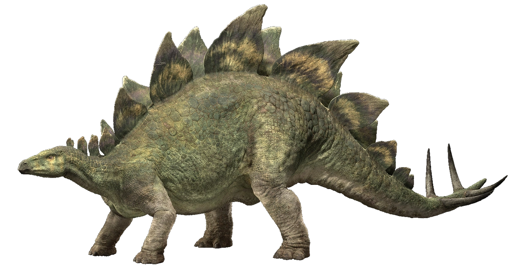
Le stégosaure, nom vernaculaire du genre éteint Stegosaurus, désigne des dinosaures herbivores caractérisés par de grandes plaques osseuses alternées en deux rangées sur leur dos, de formes et tailles différentes selon les espèces. Ils ont vécu durant le Jurassique supérieur (Kimméridgien à Tithonien inférieur), il y a environ entre 155 et 145 Ma (millions d'années) sur le continent appelé Laurasie, des États-Unis jusqu'au Portugal et au Maroc actuels. Le plus ancien stégosaure trouvé provient de la région de Boulahfa au Moyen Atlas marocain, en Afrique du Nord. Ses fossiles ont été principalement trouvés en Amérique du Nord, dans les États du Wyoming, de l'Utah et surtout du Colorado dans la formation géologique de Morrison où trois espèces différentes ont été identifiées : S. stenops, S. ungulatus et S. sulcatus[2]. Il vivait au côté d'autres herbivores comme l'Apatosaurus, le Diplodocus et le Brachiosaurus et des carnivores comme l'Allosaurus et le Ceratosaurus dont il pouvait, surtout à l'état juvénile, être la proie.
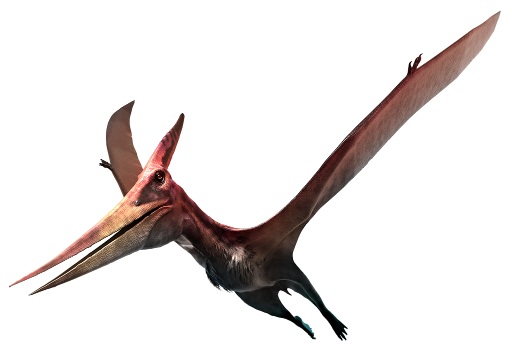
Pteranodon mesurait 7 mètres d'envergure et pesait 25 kilos. À la différence de plus anciens ptérosaures, comme Rhamphorhynchus ou Pterodactylus, le ptéranodon était dépourvu de dents, avait la queue atrophiée et des os creux, très légers et souples, mais renforcés par un réseau interne de longerons. Ces caractères le rapprochent des oiseaux. Toutefois, les ptéranodons n'étaient pas des oiseaux, bien qu'issus de la même branche d'archosaures, avec les dinosaures: les ornithodiriens. Ils avaient la peau recouverte d'une toison de pycnofibres et étaient probablement capables de réguler au moins partiellement leur température interne. Le ptéranodon est facilement reconnaissable à la longue et fine crête au dessus de son crâne. On n'en connait pas encore l'utilité exacte, mais l'on suppose qu'elle pouvait servir de contrepoids au bec ou d'attribut de séduction pour l'accouplement, ou encore de gouvernail de direction en vol. Il a également été avancé que les mâles étaient dotés de plus longues crêtes, mais cela reste à prouver car le sexe des animaux fossilisés est difficilement identifiable.
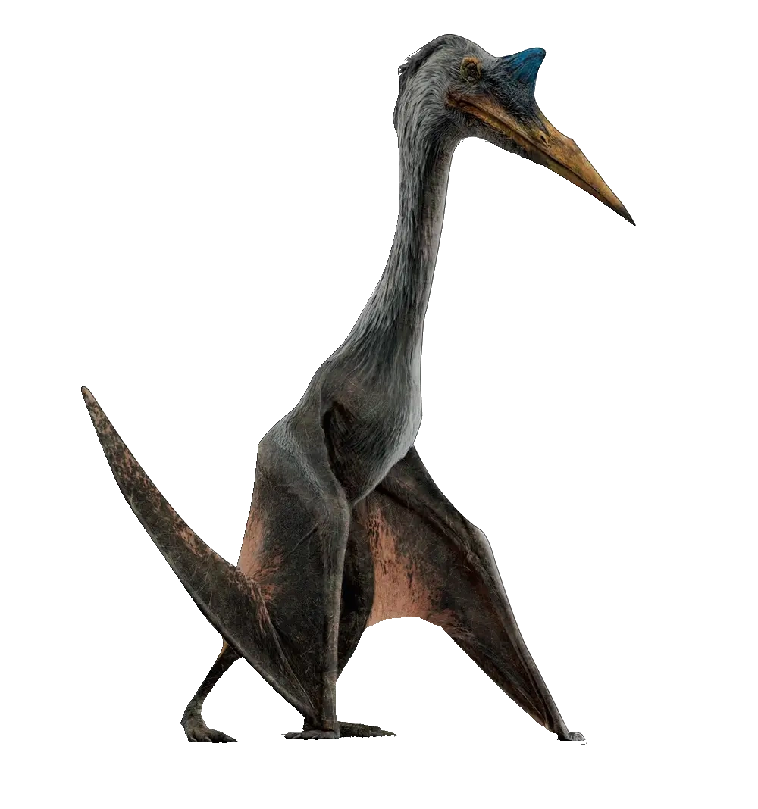
Quetzalcoatlus est l'un des plus grands ptérosaures connus avec Arambourgiania et Hatzegopteryx. Sa taille est difficile à évaluer en l’absence de fossiles complets et d'animaux actuels pouvant servir de référence pour de telles estimations Lors de sa découverte et description en 1975, les premières estimations de son envergure atteignaient presque 16 mètres en faisant la moyenne de trois hypothèses à 11.15.5 et 21 mètres. En 1981, l'inventeur du genre, Lawson (d), révise fortement à la baisse son évaluation avec une envergure de 11 à 12 mètres. En effet, il s'est avéré que les Azhdarchidae étaient munis d'ailes bien plus courtes que prévu. En 2010, Mark Witton et ses collègues l'évaluent entre 10 et 11 mètres. Sur ses pattes arrière, sa hauteur au niveau des épaules serait de plus de 3 mètres. La masse de l'animal a été initialement considérée comme très modeste au regard de la taille de l'animal, de l'ordre de 70 kg. Paul Gregory en 2002, et la plupart des estimations publiées depuis les années 2000, fournissent des valeurs sensiblement plus élevées entre 200 et 250 kg,.
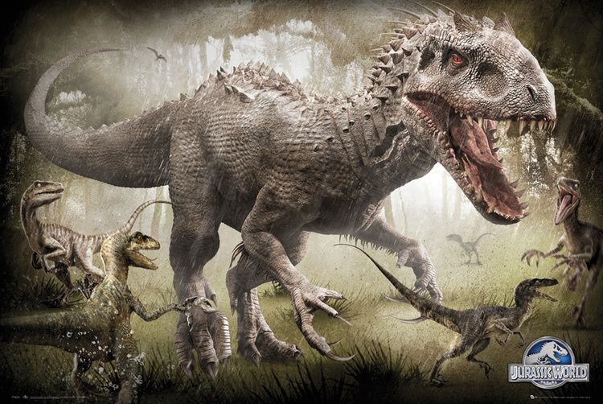
L'hybride pouvait courir à une vitesse de 48 km/h lorsqu'elle était confinée dans son enclos, son rugissement atteignant à lui seul 140db-160db, aussi fort que le décollage et l'atterrissage d'un avion Boeing 747. L'Indominus rex avait des ostéodermes hérissés sur tout le corps et des cornes au-dessus des yeux, des caractéristiques provenant de l'ADN de divers abélisaures utilisés pour sa création. Ses ostéodermes étaient extrêmement résistants, capables de supporter le feu d'un minigun GE M134 et même un tir indirect d'un lance-roquettes AT4. Elle avait également des membres antérieurs bien développés provenant du Therizinosaurus, avec des pouces opposables dont l'origine est inconnue. Elle avait des griffes en forme de faucille sur chacun de ses quatre doigts, la griffe du majeur étant la plus longue. Ses longs bras lui permettaient également d'être semi-quadrupède. Elle faisait preuve d'une immense force physique, capable d'abattre facilement un Brachiosaurus et même de plier des poutres d'acier. Elle était capable de changer de couleur grâce à l'ADN de seiche utilisée pour sa création, ce qui lui servait de camouflage pour la chasse, mais l'aidait également à grandir rapidement. L'Indominus rex avait également ce qui semblait être des proto-plumes poussant sur plusieurs parties de son corps, à savoir sa tête et ses membres antérieurs. La couleur de base de la peau était un blanc grisâtre, avec des yeux dont la sclérotique était d'un brun orange foncé ardent.
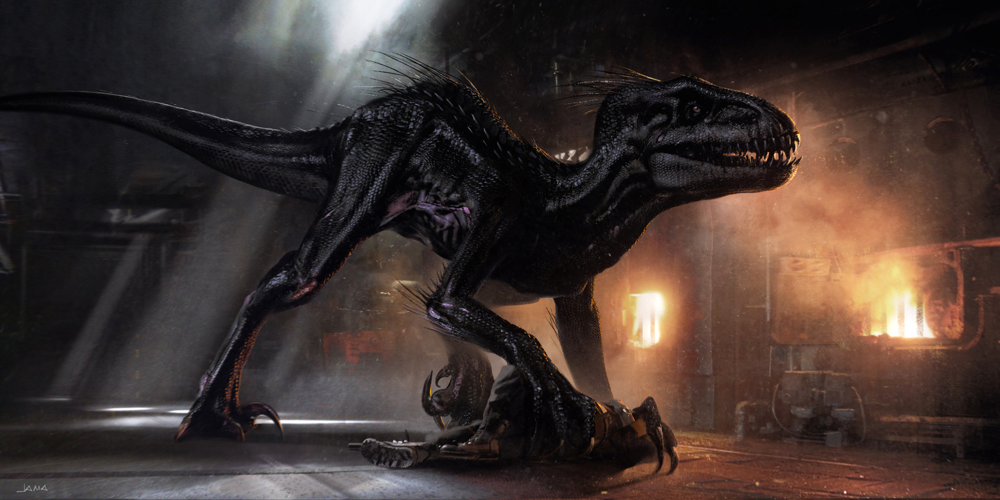
L'Indoraptor a une apparence étonnamment similaire à l' Indominus rex, mais la longueur de son corps est d'environ la moitié de celle de son prédécesseur. Il arbore des serres similaires à celles d'un Velociraptor, et sa couleur est principalement noire avec une strie jaune doré allant de la base du cou à sa queue, qui ressemble fortement à la strie bleu métallique de Blue. Comme l'Indominus rex, l'Indoraptor possède des mains à quatre doigts, un pouce opposable et trois chiffres principaux. La forme de sa tête ressemble à celle d'un Tyrannosaurus rex, et il a une marque rouge saupoudrée autour de l'orbite de l'œil. La peau autour de la bouche de l'Indoraptor est squameuse et se décolle dans certaines zones, probablement en raison d'instabilités génétiques héritées des matériaux source utilisés pour le créer. Sa bouche est également d'apparence maladive, avec des dents en lambeaux semblables à celles de l' Indominus rex. Il préfère une position quadrupède, bien qu'il puisse se tenir debout, marcher et courir de manière bipède à l'occasion. L'Indoraptor présente également une vision nocturne, ce qui lui permet de bien performer quelle que soit l'heure de la journée ou les conditions d'éclairage dans lesquelles il est poussé. L' Indoraptor dispose également de l'écholocation pour suivre sa proie en pleine nuit. L'individu vu dans Jurassic World : Fallen Kingdom était un mâle.
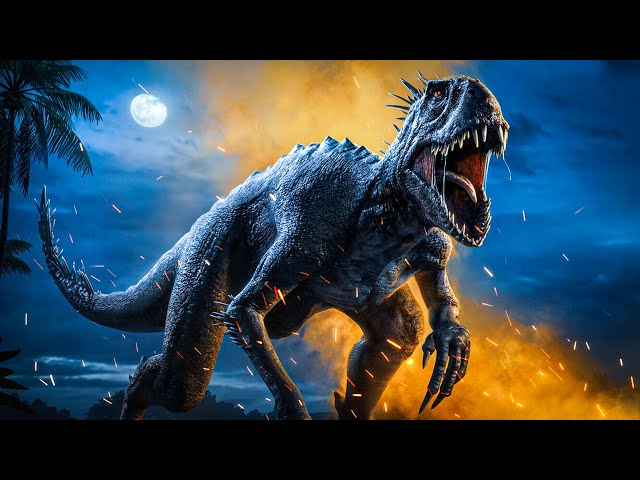
Le Scorpios rex est représenté comme un théropode de taille moyenne, étant plus petit que l' Indominus rex et légèrement plus grand que l' Indoraptor et plus gros que le Velociraptor. Les deux individus étaient ornés d'écailles noires anthracite. Ses caractéristiques sont fortement déformées et grotesques, ce qui, selon Simon Masrani, le rendait impropre à l'exposition. Ces traits comprenaient un museau brachycéphale, des yeux rouges avec des pupilles fendues placées haut sur son crâne, une supraclusion proéminente et des dents dentelées et inégales. Il a des épines venimeuses sur ses coudes, sa queue et son cou en raison de son ADN de rascasse, qui peut se détacher et s'incruster dans la chair d'un adversaire d'une manière similaire à celle d'un porc-épic. Tout comme l' Indoraptor, il a des pouces opposables et des serres agrippantes, ce qui lui permet de grimper et de tendre une embuscade à une proie d'en haut. Sa queue semi-préhensile l'aide également à grimper. Contrairement à l'Indominus rex, il a une vision infrarouge qui lui permet de voir la signature thermique de sa proie. Le Scorpios rex avait également une paire d'éperons courts poussant à l'arrière de ses talons. L'hybride avait la capacité de se reproduire par parthénogenèse grâce à l'ADN de grenouille. En conséquence, le premier S. rex a réussi à donner naissance à un autre de son espèce. Associé au fait que le Scorpios rex avait également une croissance accélérée, la population de la créature mortelle aurait augmenté rapidement si elle n'était pas contrôlée.